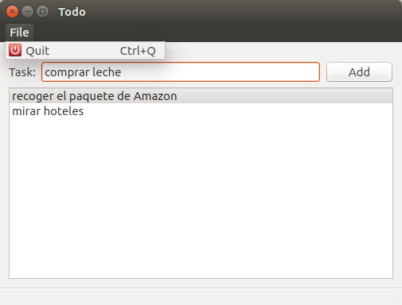

Ejercicio 1
TODO con QWidgets
Entrega
- La finalidad es que os “manchéis las manos” con:
- Qt Designer y el sistema de QWidgets
- La documentación de Qt
- 1 Semana
- El próximo martes después de la clase reviso e-mail
- juan.morales@live.u-tad.com
- Cuanta más funcionalidad más nota
- 20% de la nota final de la asignatura
Pasos sugeridos
- Diseñar la interfaz como en la imágen
- Conectar la señar triggered de la acción del menú Quit:
- Crear el slot al que vas a conectar la señal
- Poner un qDebug(“foo”) para comprobar que está conectado
- conectar la señal deseada al slot recién creado
Pasos sugeridos
- Conectar un slot llamado onItemAdded al click en el botón
- Este slot añadirá el texto de la línea de entrada a la lista de tareas
- Borrar tareas de la lista:
- Reimplementar keyPressEvent en Todo para capturar los Delete y BackSpace
- Eliminar la tarea seleccionada
¿Qué mejorarías?
- Recuperarnos de los errores
- Undo/Redo al eliminar una tarea
- Todas las tareas son editables
- Visibilidad en las opciones que podemos hacer sobre una tarea
- Botones para eliminar/completar/editar cada tarea
- Acelerar la interacción para los expertos
- Conectar el returnPressed del inputText al mismo método que el botón
- Atajo para el quit “Control-q”
- Ordenar los TAB para pasar rápido del inputText a la lista
- Dependiendo de requisitos:
- Acercarnos más al modelo mental de una lista de tareas:
- Las completadas se tachan y se ven tachadas
- Barra general de progreso de las tareas anotadas Vs completadas